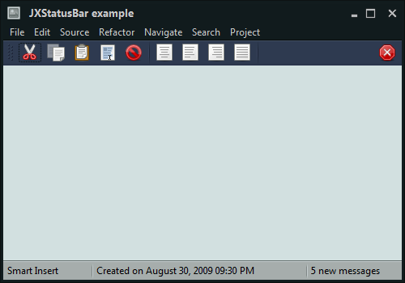

The decoration painters are used to paint the entire background area of the relevant containers - such as menu bars, tool bars, panels etc. Overlay painters, on the other hand, add the final polish that usually affects relatively small areas at the edges of the relevant decoration areas. Substance also provides a set of published APIs for applications that wish to add visually consistent overlays to custom application containers.
The overlays are best illustrated with screenshots. The following screenshot is a skeleton window under the Nebula Brick Wall skin:

This skin defines custom visual appearance for the title pane, the menu bar
and the status bar - the background of these areas is painted by the matching
decoration painter - in this case, the
org.pushingpixels.substance.api.painter.decoration.MarbleNoiseDecorationPainter.
To add the final polishing touch and create a unique visual footprint for this skin,
we use a number of overlay painters:
The Nebula Brick Wall skin defines two separate overlay painters, each
one associated with the relevant decoration areas:
// add an overlay painter to paint a drop shadow along the top
// edge of toolbars
this.addOverlayPainter(TopShadowOverlayPainter.getInstance(),
DecorationAreaType.TOOLBAR);
// add an overlay painter to paint separator lines along the bottom
// edges of title panes and menu bars
this.bottomLineOverlayPainter = new BottomLineOverlayPainter(
new ColorSchemeSingleColorQuery() {
@Override
public Color query(SubstanceColorScheme scheme) {
Color dark = scheme.getDarkColor();
return new Color(dark.getRed(), dark.getGreen(), dark
.getBlue(), 160);
}
});
this.addOverlayPainter(this.bottomLineOverlayPainter,
DecorationAreaType.PRIMARY_TITLE_PANE,
DecorationAreaType.SECONDARY_TITLE_PANE,
DecorationAreaType.HEADER);
org.pushingpixels.substance.api.painter.overlay.TopShadowOverlayPainter
is associated with the toolbar decoration area - adding the drop shadow along the top edge
of all application toolbars (see the bottom half of the zoomed area in the screenshot above).org.pushingpixels.substance.api.painter.overlay.BottomLineOverlayPainter
is associated with titlepane and header decoration areas - adding a thin
separator line along the bottom edge of the title pane and the menubar (see the top half of the zoomed
area in the screenshot above). Note that the application needs to specify what color is used
to paint the separator line - using the
org.pushingpixels.substance.api.ColorSchemeSingleColorQuery
- more on this interface later.Here is the same skeleton window under the Gemini skin:
This skin defines custom visual appearance for the title pane, the menu bar, the toolbars
and the status bar - the background of these areas is painted by the matching
decoration painter - in this case, the
org.pushingpixels.substance.api.painter.decoration.MatteDecorationPainter.
To add the final polishing touch and create a unique visual footprint for this skin,
we use a number of overlay painters:

The Gemini skin defines three separate overlay painters, each
one associated with the relevant decoration areas:
// add an overlay painter to paint a bezel line along the top
// edge of footer
this.footerTopBezelOverlayPainter = new TopBezelOverlayPainter(
ColorSchemeSingleColorQuery.DARK,
ColorSchemeSingleColorQuery.ULTRALIGHT);
this.addOverlayPainter(this.footerTopBezelOverlayPainter,
DecorationAreaType.FOOTER);
// add two overlay painters to create a bezel line between
// menu bar and toolbars
this.menuOverlayPainter = new BottomLineOverlayPainter(
new ColorSchemeSingleColorQuery() {
@Override
public Color query(SubstanceColorScheme scheme) {
return scheme.getUltraDarkColor().darker();
}
});
this.toolbarOverlayPainter = new TopLineOverlayPainter(
new ColorSchemeSingleColorQuery() {
@Override
public Color query(SubstanceColorScheme scheme) {
Color fg = scheme.getForegroundColor();
return new Color(fg.getRed(), fg.getGreen(), fg
.getBlue(), 32);
}
});
this.addOverlayPainter(this.menuOverlayPainter,
DecorationAreaType.HEADER);
this.addOverlayPainter(this.toolbarOverlayPainter,
DecorationAreaType.TOOLBAR);
This skin shows two different ways to add double-line bezel separators - the first between the menu bar and tool bar, and the second between the main application area and the footer:
org.pushingpixels.substance.api.painter.overlay.TopBezelOverlayPainter
which is associated with the footer decoration area - see the bottom zoomed
area in the screenshot above.org.pushingpixels.substance.api.painter.overlay.BottomLineOverlayPainter
associated with header decoration area - paints the top (darker) separator line
along the bottom edge of the menu bar.org.pushingpixels.substance.api.painter.overlay.TopLineOverlayPainter
associated with toolbar decoration area - paints the bottom (lighter) separator line
along the top edge of the tool bar.The last example comes from the Twilight skin:

This skin defines custom visual appearance for the title pane, the menu bar, the toolbars
and the status bar - the background of these areas is painted by the matching
decoration painter - in this case, the
org.pushingpixels.substance.api.painter.decoration.MatteDecorationPainter.
To add the final polishing touch and create a unique visual footprint for this skin,
we use a number of overlay painters:

The Gemini skin defines four separate overlay painters, each
one associated with the relevant decoration areas:
// Add overlay painters to paint drop shadows along the bottom
// edges of toolbars and footers
this.addOverlayPainter(BottomShadowOverlayPainter.getInstance(),
DecorationAreaType.TOOLBAR);
this.addOverlayPainter(BottomShadowOverlayPainter.getInstance(),
DecorationAreaType.FOOTER);
// add an overlay painter to paint a dark line along the bottom
// edge of toolbars
this.toolbarBottomLineOverlayPainter = new BottomLineOverlayPainter(
new ColorSchemeSingleColorQuery() {
@Override
public Color query(SubstanceColorScheme scheme) {
return scheme.getUltraDarkColor().darker();
}
});
this.addOverlayPainter(this.toolbarBottomLineOverlayPainter,
DecorationAreaType.TOOLBAR);
// add an overlay painter to paint a dark line along the bottom
// edge of toolbars
this.toolbarTopLineOverlayPainter = new TopLineOverlayPainter(
new ColorSchemeSingleColorQuery() {
@Override
public Color query(SubstanceColorScheme scheme) {
Color fg = scheme.getForegroundColor();
return new Color(fg.getRed(), fg.getGreen(), fg
.getBlue(), 32);
}
});
this.addOverlayPainter(this.toolbarTopLineOverlayPainter,
DecorationAreaType.TOOLBAR);
// add an overlay painter to paint a bezel line along the top
// edge of footer
this.footerTopBezelOverlayPainter = new TopBezelOverlayPainter(
new ColorSchemeSingleColorQuery() {
@Override
public Color query(SubstanceColorScheme scheme) {
return scheme.getUltraDarkColor().darker();
}
}, new ColorSchemeSingleColorQuery() {
@Override
public Color query(SubstanceColorScheme scheme) {
Color fg = scheme.getForegroundColor();
return new Color(fg.getRed(), fg.getGreen(), fg
.getBlue(), 32);
}
});
this.addOverlayPainter(this.footerTopBezelOverlayPainter,
DecorationAreaType.FOOTER);
The overlay painters used in the Twilight skin are:
org.pushingpixels.substance.api.painter.overlay.TopLineOverlayPainter
associated with toolbar decoration area - paints the lighter top separator line
along the top edge of the tool bar - see the top zoomed area in the screenshot above.org.pushingpixels.substance.api.painter.overlay.BottomLineOverlayPainter
associated with toolbar decoration area - paints the darker bottom separator line
along the bottom edge of the tool bar - see the top zoomed area in the screenshot above.org.pushingpixels.substance.api.painter.overlay.TopBezelOverlayPainter
associated with footer decoration area - paints the double bezel separator lines
along the top edge of the status bar - see the bottom zoomed area in the screenshot above.org.pushingpixels.substance.api.painter.overlay.BottomShadowOverlayPainter
associated with toolbar and footer decoration areas - paints the
drop shadow along the bottom edge of these areas - see the top zoomed area in the screenshot above.To use the matching overlay painters in custom painting routines of your application, call the following published Substance APIs:
SubstanceLookAndFeel.getCurrentSkin()
to retrieve the component skin.SubstanceLookAndFeel.getDecorationType()
to retrieve the decoration area type of the component.SubstanceSkin.getOverlayPainters()
to retrieve the overlay painters registered for the specific decoration area type.SubstanceOverlayPainter.paintOverlay()
(see below) to paint the overlays on the specific graphics context.The base class for Substance overlay painters is
org.pushingpixels.substance.api.painter.overlay.SubstanceOverlayPainter.
The only painting method in this class is:
/**
* Paints the overlay.
*
* @param graphics
* Graphics context.
* @param comp
* Component.
* @param decorationAreaType
* Decoration area type. Must not be <code>null</code>.
* @param width
* Width.
* @param height
* Height.
* @param skin
* Skin for painting the overlay.
*/
public void paintOverlay(Graphics2D graphics, Component comp,
DecorationAreaType decorationAreaType, int width, int height,
SubstanceSkin skin);
The width and
height
parameters specify the rectangle for the overlays (the overlay
painters can only paint on rectangular areas), the
skin specifies the Substance
skin to be used to compute the gradient colors, while
decorationAreaType
indicates the decoration area type.